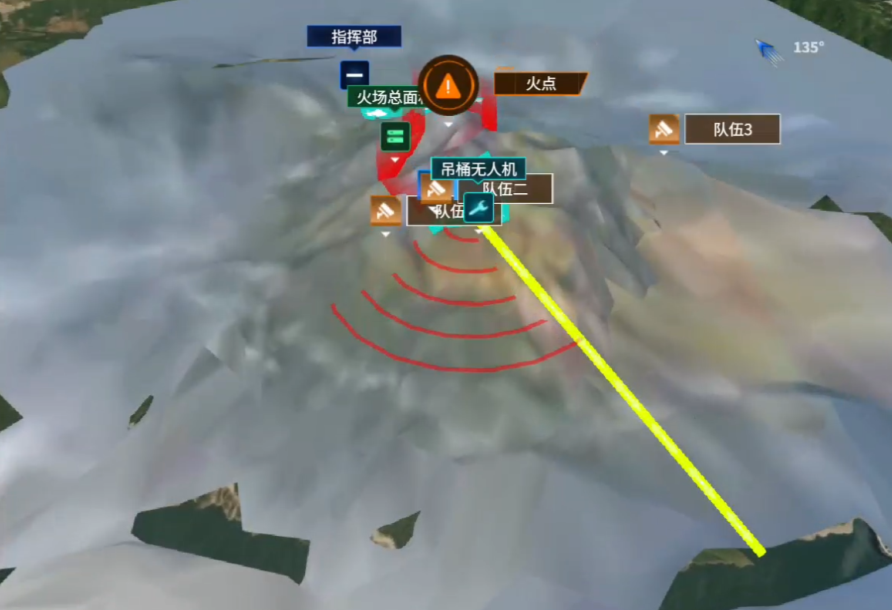
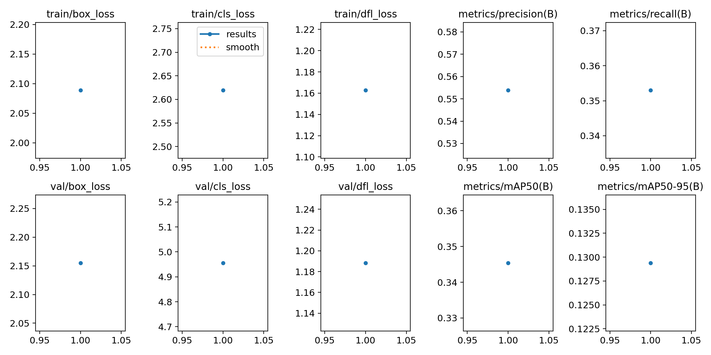
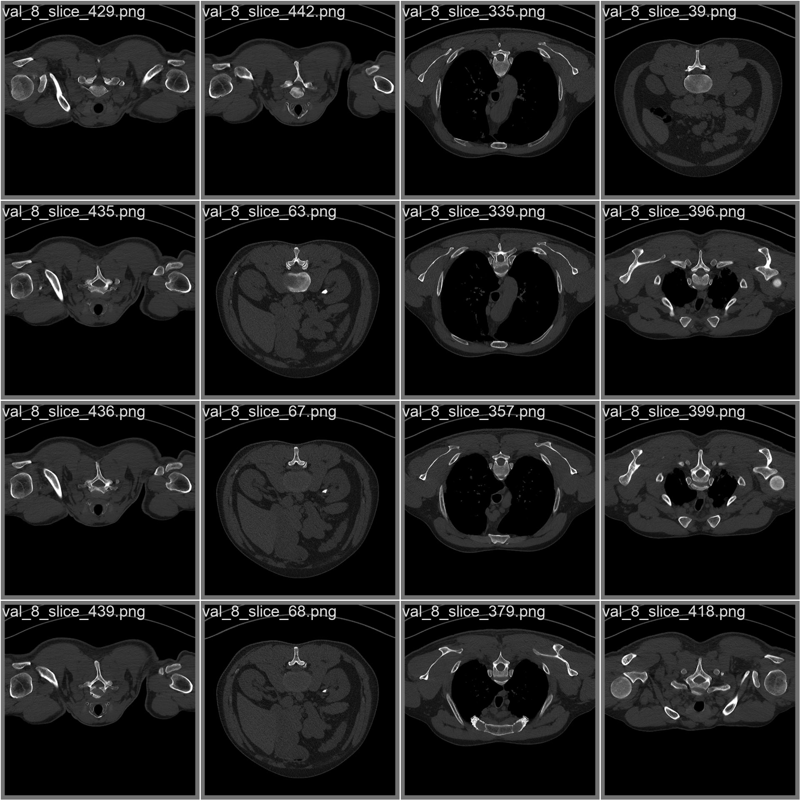
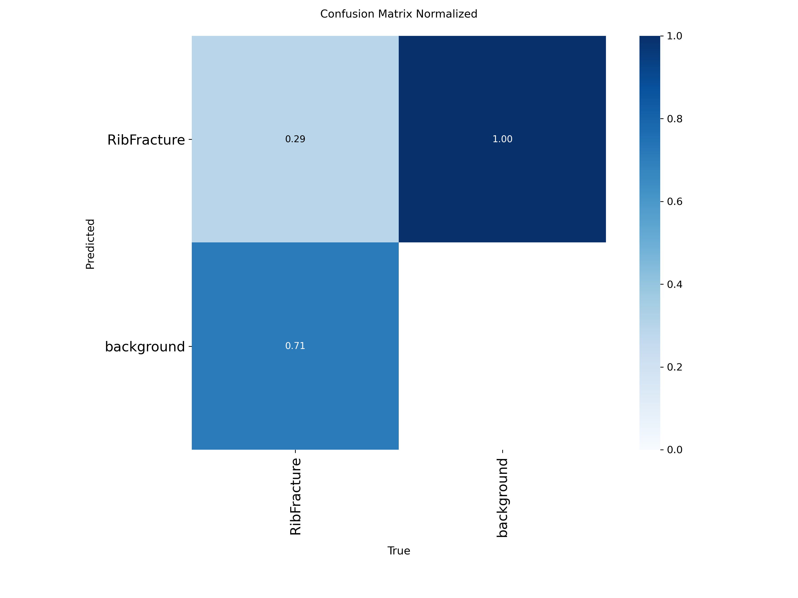

这是一个离线演示页：不需要联网、不需要后端服务，打开即可操作。页面里的交互流程复刻自真实系统（四服务审查流水线、规则热更新、评测基准），指标来自实际评测数据。
每张卡片都标了个人边界：我实际负责的部分 vs 团队部分。
选一份样例文档，点"开始审查"，可以看到四个服务依次工作、规则引擎命中缺陷、最后输出报告与规则热更新。
/api/v1/audit、/api/v1/tasks/{id}、/api/v1/report/{id}、/api/v1/download/{id}；规则热更新走 /api/rules/reload。这是我们评测基准里最重要的一个发现：只报高分会误导，真实水位要看隐蔽缺陷。这也解释了为什么"基准会高估系统"。
| 口径 | 含义 | 为什么要写清楚 |
|---|---|---|
| 单缺陷差分计数协议 | 同一次注入引发的多条告警，只按注入缺陷计一次 | 否则级联告警会被误判为误报，指标失真 |
| 定位级严格口径 82.8% | 命中的告警必须指向注入位置或包含注入文本 | 17% 的"命中"无法证明落在注入位置，两个口径必须并列披露 |
| 384 / 402 用例 | 脚本注入的受控缺陷，位置固定、易于定位 | 这类缺陷分数高是正常的，不能单独代表部署能力 |
| 97.1%（140 条） | 50 篇真实感文档、人工注入的隐蔽缺陷，三轮一致 | 真人笔误式缺陷才接近真实水位 |
| 干净基线 1019 条 | 无缺陷文档仍会返回大量 out-of-oracle 记录 | 差分对照是唯一能区分"新引入缺陷"与"文档原有特征"的办法 |
| 5.1s / 约 350s | 规则引擎 / 单篇 LLM 审查耗时 | 解释为什么用"规则 + LLM"分层，而不是全 LLM 逐篇跑 |
| LLM 路径 3.3% 挂起 | 2 次挂起（6,550s / 58,244s），重跑后收敛 | "并发 100%" 只覆盖规则/网关快路径，并排展示时要说明 |
点按钮看一条真实处理链路：扫描页怎么被 OCR 兜住、出处怎么被定位回原页。
硬件不在身边也能讲清的链路：为什么用 MCP 注册工具、DP 107 做什么、云端怎么保证"生成完就能放"。
| 指标 | 实测 | 说明 |
|---|---|---|
| 单曲渲染 | 约 1.4s | 无 GPU，实时出曲 |
| 整包烧录 | 约 73s | TuyaOpen SDK 整包 |
| 关键修复 | 生成 URL 不可访问 | 用 nginx 静态音频服务解决，保证现场演示稳定 |
保留原有完整演示，并补充可供 HR 快速浏览的项目截图。



